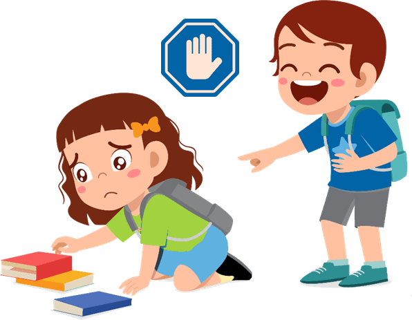
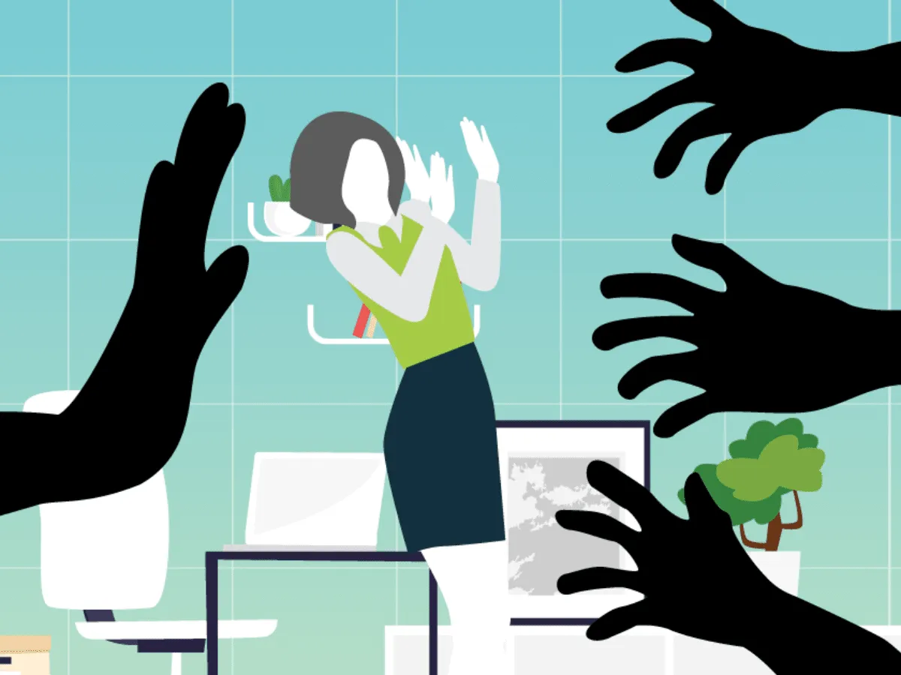

Acoso Escolar
El acoso escolar puede darse de muchas maneras distintas. El más común es aquel que se produce entre alumnos, pero también pueden existir casos en los que el rol de acosador o el de víctima lo representan otras personas. Así, en algunas ocasiones el agresor puede ser un educador o un grupo de estudiantes.
Laboral

El acoso laboral es muy similar en todos los aspectos al escolar, con la diferencia de que se produce en un entorno de trabajo en lugar de dentro de un centro educativo. Al igual que el primer tipo de acoso, generalmente es considerado como uno de los más dañinos debido a que quienes lo sufren están en constante contacto con su agresor.
Sexual
El acoso sexual puede darse en todo tipo de contextos, desde el entorno de trabajo hasta el hogar, los círculos de amistades o incluso en la calle. Tanto los agresores como las víctimas pueden ser hombres o mujeres, aunque existen algunas combinaciones más habituales que otras.